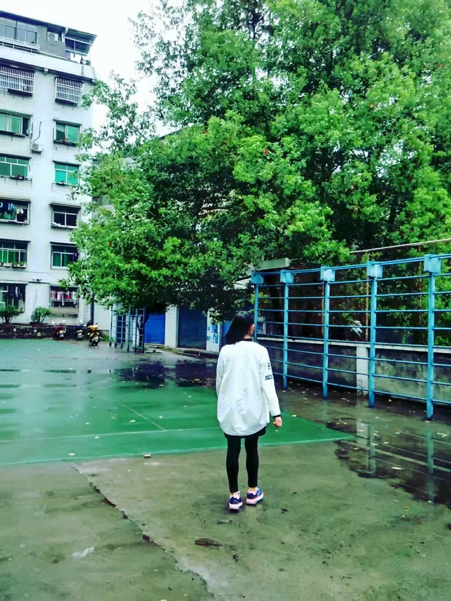

我叫周婵 出生于1999年 来自四川达州 现在是软件工程专业三班的一名同学
时而开朗 时而忧郁 我的QQ空间
这就是我
一个可爱的我我喜欢的饮品
我如果爱你――
绝不像攀援①的凌霄花，
借你的高枝炫耀自己；
我如果爱你――
绝不学痴情的鸟儿，
为绿荫重复单调的歌曲；
也不止像泉源，
常年送来清凉的慰藉②；
也不止像险峰，
增加你的高度，衬托你的威仪。
甚至日光，
甚至春雨。
不，这些都还不够！
我必须是你近旁的一株木棉，
作为树的形象和你站在一起。
根，紧握在地下；
叶，相触在云里。
每一阵风过，
我们都互相致意，
但没有人，
听懂我们的言语。
你有你的铜枝铁干，
像刀，像剑，也像戟；
我有我红硕的花朵，
像沉重的叹息，
又像英勇的火炬。
我们分担寒潮、风雷、霹雳；
我们共享雾霭③、流岚⑤、虹霓④。
仿佛永远分离，
却又终身相依。
这才是伟大的爱情，
坚贞就在这里：
爱――
不仅爱你伟岸的身躯，
也爱你坚持的位置，
足下的土地。
忏悔录
上学期选择了前端 可是没有认真学习 作业也是靠copy 为此 我想引用一句话表达的的忏悔
人非圣贤孰能无过
嘿嘿嘿嘿
以上所运用的标签 来自于
提示：W3School
的学习 etc. WWW